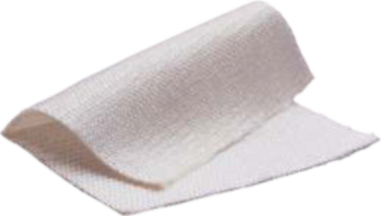

Hemostasis achieved by applying pressure to a bleeding site.
Activation of clotting factors through direct contact with a surface.
An adhesive that uses low temperatures to bond surfaces.
A fast-setting adhesive used for wound closure.
The quality of being toxic to cells.
An adhesive used for closing skin wounds.
Surgical repair or reconstruction of the skin.
Use of electric current to cut tissue or stop bleeding.
Controlling bleeding during endoscopic procedures.
A drug used to constrict blood vessels and reduce bleeding.
An adhesive derived from fibrin that promotes clotting and hemostasis.
A clot formed from fibrin that helps stop bleeding.
A sealant made from fibrin to aid in wound closure and hemostasis.
A blood plasma protein essential for clot formation.
The attachment of fibroblast cells to a substrate or tissue.
A gel-like hemostatic agent that conforms to irregular surfaces.
A matrix made from gelatin used in wound dressings and tissue repair.
Hemostatic sponge made from gelatin used to control bleeding.
A chemical used to bond surfaces together.
An acid used in various medical and cosmetic procedures.
A dressing designed to stop bleeding from wounds.
A powder that aids in stopping bleeding by promoting clotting.
Excessive bleeding from blood vessels.